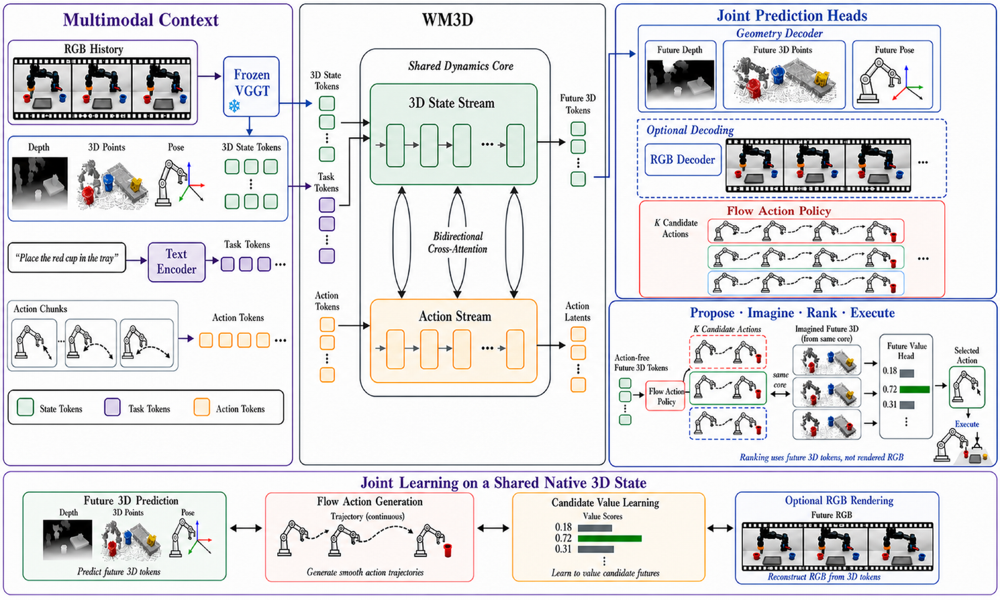
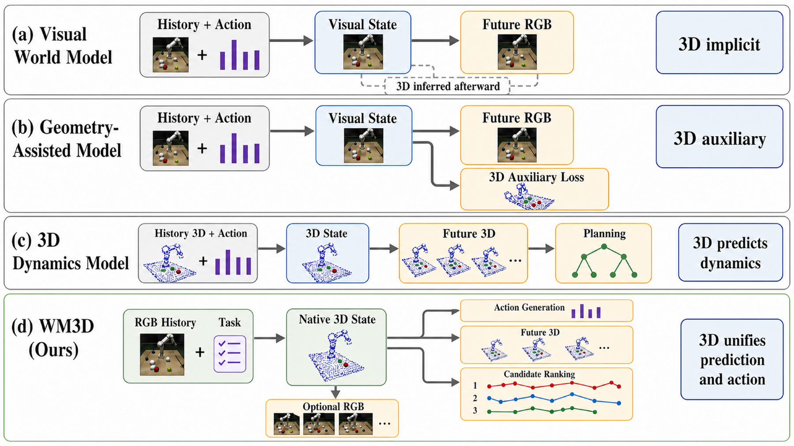
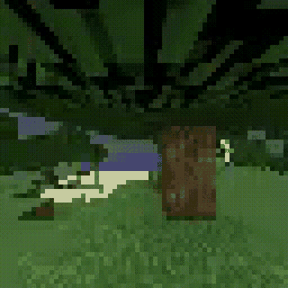
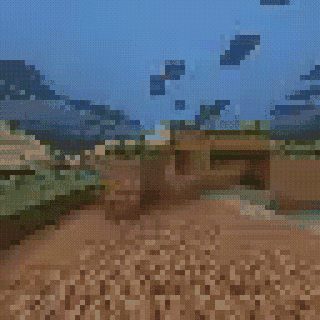

Appearance is not the objective
Action selection depends on physically grounded reasoning over scene geometry, object pose, depth, contact, rigid-body motion, and camera configuration. Predicting pixels is only an intermediate step toward that.
WM3D / Native-3D world model
Robots do not act on pixels. WM3D predicts future depth, point structure, and pose in one action-conditioned geometric state, then generates executable actions and ranks imagined futures from that same state. RGB is a rendered read-out, not the state.

Problem framing
Recent robotic world models predict the future as RGB video. The rollouts are visually compelling, but they learn how appearance evolves rather than how the physical world changes, so they can remain wrong in depth, contact, rigid-body motion, or camera pose.
Action selection depends on physically grounded reasoning over scene geometry, object pose, depth, contact, rigid-body motion, and camera configuration. Predicting pixels is only an intermediate step toward that.
A model can predict a successful grasp under an incorrect end-effector pose, move an object without valid contact, or break geometric consistency across viewpoints. Such failures undermine reachability, collision avoidance, and contact planning.
Video models keep geometry implicit in pixels. Latent dynamics models compress the future into hidden states with limited access to predicted structure. Vision-language-action models skip explicit future prediction entirely.
The primary state of a robotic world model should be native 3D geometry rather than image space.
World-model paradigms
The distinction is not whether a model touches 3D, but whether 3D is the state that evolves under action. WM3D makes geometry both the predictive substrate and the decision interface.

Visual world models predict future RGB and recover 3D afterward. Geometry-assisted models add a 3D loss beside the visual state.
One geometric state carries depth, point structure, pose, and geometry tokens, conditioned on task language and candidate actions.
3D dynamics models forecast geometric futures for planning, which is the closest prior family to ours.
Where the line falls: current systems rarely maintain a single action-conditioned geometric state that simultaneously supports future prediction, visual inspection, executable action generation, and candidate selection. WM3D's claim is that unification, not the independent combination of a geometry encoder, a renderer, and a policy.
Method
A frozen geometry foundation model builds the native-3D state from observation history. A dual-stream dynamics core then predicts how that state evolves under task language and a candidate action chunk, and every downstream interface reads from the result.
S3Dt = ( Zgeot , Dt , Xt , ξt )
These quantities are not auxiliary supervision. They constitute the predictive state whose evolution is conditioned on the robot action.
A frozen VGGT-1B encoder maps the observation history to geometry tokens, depth, point maps, and pose. Representations are cached before large-scale training, so the encoder never runs in the training loop.
A state stream carries scene-level geometric evolution while an action stream represents the future action sequence. Bidirectional cross-attention exchanges information, so different actions yield different geometric futures.
Geometry heads decode future depth, point structure, and pose. A flow-matching policy head emits executable end-effector and gripper commands from the same state.
K candidate action chunks are each passed through the same core. A value head scores the predicted futures on progress and feasibility, and the highest-scoring candidate is executed.
A separate rendering branch decodes predicted geometry into RGB for inspection and training consistency. It does not define the dynamics state and is excluded from candidate ranking and final action generation. Because the frozen encoder also supplies supervision, we report agreement with the teacher representation separately from independently measured accuracy and downstream control.
Training setup
The WM3D core carries no initialization from pretrained video generators, VLMs, or VLA models. Robot videos are converted once into cached native-3D supervision, so the geometry encoder never runs online during large-scale training.
Data is drawn from Open X-Embodiment-style datasets and a DROID subset. Each action carries six end-effector pose channels and one gripper channel. Training proceeds in stages: action-dependent 3D dynamics first, then rendering consistency as an auxiliary constraint, then policy and value alignment for closed-loop decisions.
Evidence with claim boundaries
How competitive is a compact native-3D world model against much larger video models? Do the predicted geometric states respond to changes in the action? Can the same state support closed-loop control? Each is reported on its own terms, never collapsed into one number.
Competitive future prediction against 5B video baselines.
Predicted geometry responds to the conditioning action.
The same state supports closed-loop control and imagination-based selection.
Q1 · WorldArena v1
All methods are evaluated on the same 500-video test split from RoboTwin 2.0 Clean50. WM3D's overall EWMScore sits between the two baselines while its depth prediction leads outright.
| Model | Core | EWM | JEPA | Motion | Interact. | Traj. | Depth |
|---|---|---|---|---|---|---|---|
| Wan2.2 | 5B | 50.99 | 0.80 | 0.68 | 0.52 | 0.15 | 0.82 |
| Fast-WAM | 5B | 43.16 | 0.47 | 0.63 | 0.37 | 0.20 | 0.89 |
| WM3D | 1B | 49.68 | 0.35 | 0.59 | 0.32 | 0.15 | 0.91 |
How to read this table. WorldArena v1 scores embodied prediction across appearance, motion, interaction, trajectory, and depth. WM3D's EWMScore of 49.68 is 1.31 points below Wan2.2 and 6.52 above Fast-WAM. We do not lead the JEPA, motion, interaction, or trajectory dimensions. The point of the table is the depth column: with a 1B dynamics core against 5B cores, geometric prediction is where the native-3D state pays off.
Q1 · RoboNet
Same 256-video test split, same two observation frames in, same ten frames out at 64 × 64. Metrics are computed only over predicted frames, with SSIM and LPIPS on a 0–100 scale.
| Model | Core | FVD ↓ | PSNR ↑ | SSIM ↑ | LPIPS ↓ |
|---|---|---|---|---|---|
| Wan2.2 | 5B | 774.52 | 21.05 | 73.43 | 20.47 |
| Fast-WAM | 5B | 1044.97 | 20.44 | 70.19 | 24.60 |
| WM3D | 1B | 327.57 | 26.46 | 86.61 | 8.34 |
Bars are scaled to the worst result, so shorter is better.
Under this matched observation, prediction-horizon, resolution, and test-split setting, the 1B native-3D core provides a stronger future representation than the larger video-centric baselines. These comparisons measure overall system performance; they are not capacity-matched ablations.
Q2 · Counterfactual action sensitivity
Video metrics cannot establish whether a world model captured the geometric consequence of an action. We compare the recorded action against three counterfactuals directly in the native state space, on a frozen 160-window split.
| Signal | Zero | Sign flip | Grip toggle |
|---|---|---|---|
| Token cosine win ↑ | 0.856 | 0.944 | 0.638 |
| Depth win ↑ | 0.869 | 0.894 | 0.550 |
A win means the recorded action's predicted future landed closer to the observed outcome than the counterfactual's. 0.5 is chance: the action made no difference.
chance = 0.500
How to read this. WM3D is most sensitive to perturbations of continuous robot motion: recorded actions beat sign-flipped alternatives in 94.4% of geometry-token comparisons and 89.4% of depth comparisons. Gripper toggles separate far more weakly, at 0.638 and 0.550, which says the model captures pose-conditioned geometric evolution more reliably than the effect of a discrete gripper switch. The pattern holds across all five evaluation sources. Because these metrics are defined in WM3D's internal state, we report them as model diagnostics, not cross-model comparisons.
Q2 · Future-state accuracy
On the frozen 192-window diagnostic split, we score how close the predicted future depth is and whether the predicted geometric change follows the direction of the observed change rather than reconstructing an average scene.
The frozen encoder also supplies the supervision signal, so agreement with the teacher representation is reported separately from independently measured accuracy and from downstream control. Those closed-loop numbers follow below.
Q3 · Closed-loop control
Two decision interfaces run on the same 1B core. Direct executes the policy output greedily. Imagine-rank predicts the native-3D future of several candidate action chunks and executes the one scoring highest on progress and feasibility.
LIBERO · 2,000 episodes per method
Four suites, ten tasks each, 50 initial states per task, a 300-step horizon, identical initial conditions, and the official success detector.
| Model | Core | Spatial | Object | Goal | Long | Avg. |
|---|---|---|---|---|---|---|
| Fast-WAM | 5B | 97.2 | 99.6 | 96.0 | 93.8 | 96.65 |
| Wan-OFT | 5B | 96.4 | 98.6 | 94.8 | 85.8 | 93.90 |
| WM3D (direct) | 1B | 92.4 | 87.8 | 85.0 | 66.6 | 82.95 |
| WM3D (imagine-rank) | 1B | 93.0 | 95.6 | 92.2 | 73.2 | 88.50 |
Where we fall short. The 1B core supports strong closed-loop control, but it does not beat the 5B video-based baselines on average, and LIBERO-Long is the clear weakness at 73.2 against 93.8 for Fast-WAM. What the table does establish is that imagination-based selection improves every suite over direct execution using the same weights, with the largest gains on Object and Goal.
Physical robot · single-arm pick-and-place
Trained on 53 teleoperated demonstrations and 19,136 frames at 30 fps, with head, overhead, and wrist views plus a seven-dimensional robot state. All views pass through the frozen geometry encoder; only the action policy is fine-tuned.
| Method | Core | Success (%) ↑ | Cycles/ep. ↑ |
|---|---|---|---|
| Fast-WAM | 5B | 50 | 2.5 |
| Wan-OFT | 5B | 20 | 2.0 |
| WM3D (direct) | 1B | 60 | 2.6 |
| WM3D (imagine-rank) | 1B | 70 | 2.7 |
Ten trials per method on the same repeated pick-and-place task.
Scope of this claim. Ten trials is a small sample: the count precludes a statistical significance claim, and we present this as preliminary evidence that imagined geometric outcomes can improve action selection rather than as a settled result. Expert-action replay was used to verify the control harness before policy evaluation, and both baselines were adapted with the same demonstrations and control protocol.
Visual evidence
Each clip pairs an imagined future against the real future across different robots and cameras. The final panel is the counterfactual test made visible: one starting observation, different action chunks, different imagined outcomes.


Open-world game domain
Beyond robot arms, the same formulation runs on an open-world game domain, where progress means discrete, long-horizon goals: gather a resource, craft an item, then place it. Each clip is a full task carried out inside the model's imagined world.



These are qualitative task-domain demos on the Diamond Minecraft environment, shown to illustrate long-horizon controllability rather than as a benchmark claim; the quantitative evidence stays separated in the results section above.
Rendering layer
The rendering branch receives structured conditions from the native-3D core and is conditioned on the same actions that determine geometric evolution, with the predicted action read out on-screen. It exists for inspection and training consistency, and one path generalizes across very different worlds.
Manipulation, warehouse, and driving are rendered by one action-conditioned branch that sits downstream of the world state, not as a passive post-processor. In preliminary tests it reduces motion-region L1 from 0.14 for copy-last to 0.07, though matched comparisons against specialized video generators remain incomplete. This branch does not define the dynamics state and never participates in candidate ranking. Clips are muted and loop automatically.
Limitations and future work
The results support native-3D dynamics as a shared foundation for prediction, action generation, and control through imagined futures. Several boundaries are worth stating plainly.
WM3D inherits the errors of its frozen geometry tokenizer on transparent or reflective surfaces, under severe occlusion, and with atypical cameras. Because that same encoder supplies supervision, teacher agreement and independently measured accuracy are kept separate throughout.
LIBERO-Long is the weakest suite at 73.2, well behind the 5B video baselines. Average success also trails them.
Ten trials of a single-arm pick-and-place task. Enough to be suggestive, not enough for a significance claim.
The auxiliary renderer targets inspection and action consistency. Matched comparisons of its coarse RGB head against specialized generators remain incomplete.
Compute and memory limit the core to 1B parameters. Next steps are scaling to 5B and completing component ablations while keeping native 3D as the principal state.
Citation
WM3D: A Unified Native 3D World Model for Predicting Future States and Robot Actions.
@article{liu2026wm3d,
title = {WM3D: A Unified Native 3D World Model for
Predicting Future States and Robot Actions},
author = {Liu, Mingquan and Qiu, Chenhao and Li, Jiayi and
Yao, Shanming and Lin, Sixu and Liu, Guiliang and
Wu, Simo},
year = {2026}
}